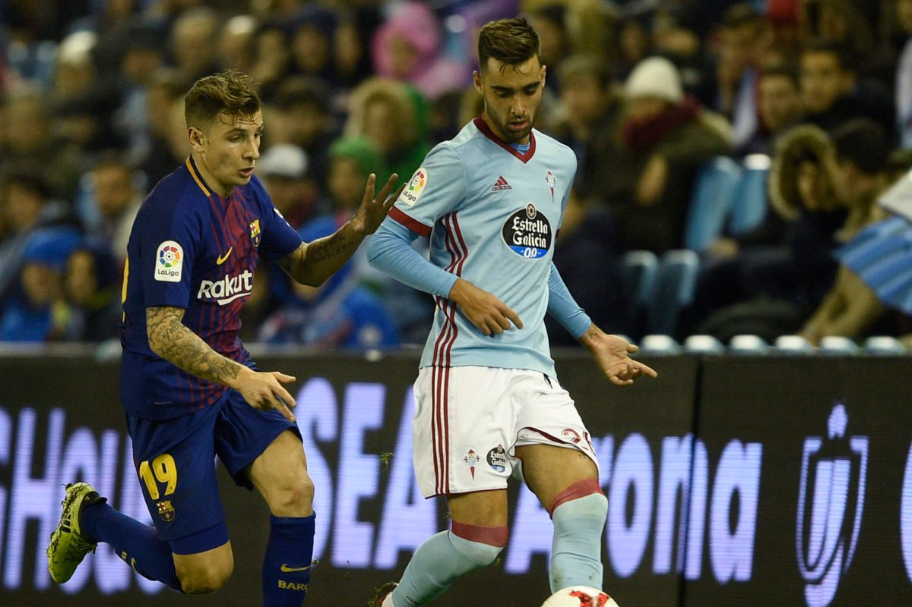
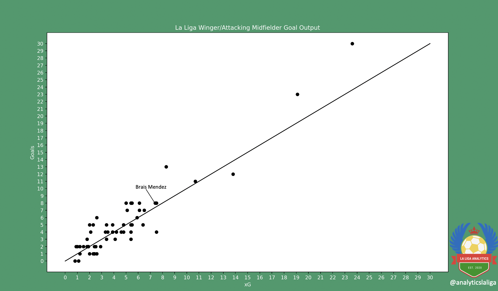
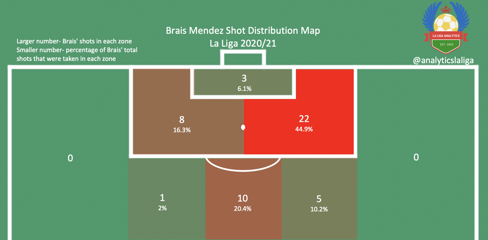
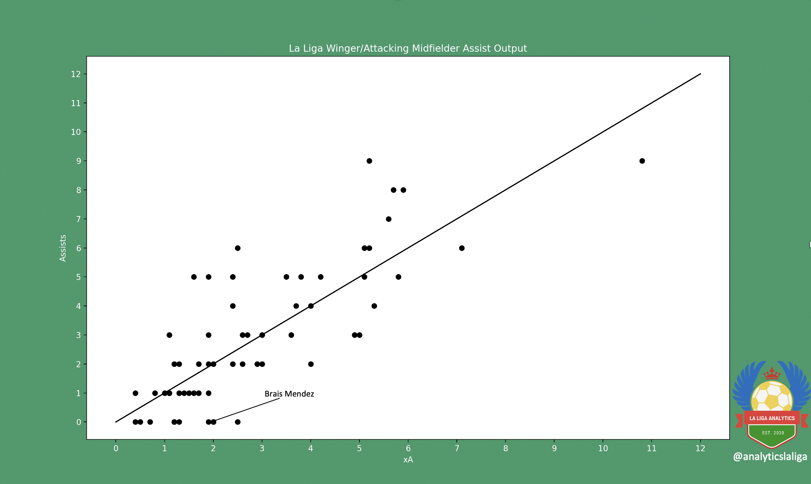
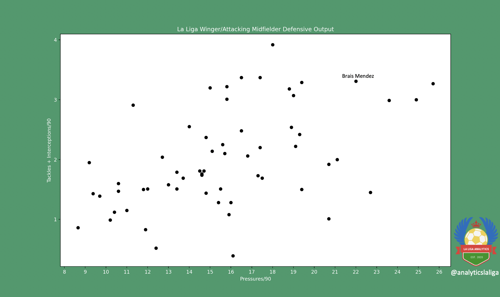

Brais Méndez Scouting Report by Charlie Tuley - May 24, 2021
|
ctuley@umich.edu

Brais Méndez
Club: Celta Vigo
Nationality: Spain
Position(s): Right Wing, Attacking Midfielder
Squad Number: 23
Date of Birth (Age): January 7, 1997 (24)
Dominant Foot: Left
Height: 1.84m, 6ft 3in
Market Value (via Transfermarkt): €10.8M
Contract Expires: June 30, 2024
All video clips come from Wyscout.com
*Note: Brais Méndez is 24 years old, and has already made 115 appearances in La Liga. He has already established himself on the top stage, and therefore isn’t the most “scoutable” player. Therefore, this report will not remark much on Méndez’s potential, but rather focus on his current strengths and weaknesses.
Background
From Mos, Galicia, Brais Méndez’s footballing career began very early with him joining Sárdoma’s youth squad at the age of four. From there, he would go to spend nine years with Santa Marina’s academy and three with Villarreal’s youth side before joining Celta’s youth setup in 2014. Méndez would play for Celta B for four seasons before receiving a call-up to the first team during the 2017/2018 season by then manager Juan Carlos Unzué.
Since then, Méndez has gone on to make 123 appearances for the first team, scoring 15 goals and assisting 11 in his four seasons with Celta. He had a rocky 2019/2020 campaign under Oscar Garcia (not scoring a single goal in 16 total matches), who mostly utilized him as a substitute, but has since flourished under the management of Eduardo Coudet this past season.
In terms of his presence with the Spanish National Team, Méndez hasn’t had much. He’s made a total of seven appearances with the Under-17’s, Under-18’s, and Under-21’s, and he has one cap for the first team, a friendly against Bosnia and Herzegovina where he scored the lone goal in a 1-0 win.
Shooting
Shooting is by far Brais’ most attractive trait. Méndez scored 9 goals during the 2020/21 La Liga campaign, ranking in the 94th percentile for wingers in the “Big Five” leagues for non-penalty goals. Even better, his 9 goals came from 7.5 expected goals (and his 8 non-penalty goals came from 6.7 non-penalty expected goals), meaning that he overperformed his xG by a margin of 1.5 (he scored 1.5 more goals than he statistically should have this season).


As can be seen from the above graphic, Méndez’s shots come from just about anywhere (with a large emphasis on the right side of the penalty area). This is because Méndez has two distinct styles of shooting, the first being the cut-from-the-right-flank and hit a shot with his left foot, where the vast majority of the shots from outside of the penalty area have come from.
Despite taking many shots from outside of the penalty area this season, Méndez didn’t register a goal from outside of the box. However, scoring is only a small aspect of shooting from distance, just the act of shooting has great ramifications on the flow of the game and how the opposition is forced to defend. For example, defenders can’t give Brais any space outside of the penalty area, forcing at least one of them to step out to close him down, which opens up space in the area that the defender left behind that Celta can exploit (or it gives Celta’s two strikers a more favorable matchup with their defensive counterparts).
Méndez’s other typical shot comes from him making runs directly at the opposition back line, trying to get in behind. This allows his teammates to find Brais in space in a dangerous area close to goal, or it forces the opposition defense to be pulled out of position to accomodate for Méndez, creating space for the Spaniard’s teammates. A few examples of this type of run and shot from Méndez can be found below (and I just wanted to post that excellent chipped goal).
Passing
Just like his shooting, Méndez has a very distinct style of passing. He’s left footed, and it really shows. The vast majority of his passes are with his left foot, and he’ll even go as far to pass with the outside of his left foot to avoid using his right foot (example seen below). His decision-making when on the ball is generally pretty good, and might even be a bit too safe at times. He heavily favors short passes, 54.3% of his passes are between 5 and 15 yards. As these passes are usually quite simple, he completes them at a steady rate of 86.3%. He performs a lot of one-two combinations with his teammates, and his first touch passing is quite clean.
He’s one of Celta’s better ball progressors, averaging 3.4 progressive passes each match. This is due to Méndez’s defensive positioning, since he tracks back very well to help his teammates defend. Since he’s usually so deep in his own territory once Celta regain possession, it’s only fitting that he’d be one of the team’s top ball progressors.
I’ll get into it more into the next section, but Brais is a player with quite a bit of flair. He likes to perform tricks and flicks and just be on the ball in general. He plays with loads of confidence, something that can be both beneficial and detrimental to the team. One detriment is that he often takes one too many touches on the ball when in tight spaces, allowing his opponents to close him down. This restricts his passing options, and often leads to giveaways from Méndez.

Generally, I’ve never been a fan of the expected assists metric, there are just too many factors at play to reflect a player’s true abilities. However, I feel that it needs to be mentioned here: Méndez didn’t register a single assist this season, which is definitely suspect for a player who started 30 matches playing in a winger/wide midfielder role. Despite not assisting any goals this season, Méndez did end the season with an xA of 2, meaning that he should have had two assists this season had his teammates finished the chances that Méndez created. While this is still quite low, it makes sense given the team that he plays in; Celta aren’t looking at Brais Méndez to be their chief creator, those responsibilities fall to players like Iago Aspas, Denis Suarez and Nolito.
Also, any excuse to post that pass is a good one.
Ball Carrying
As stated previously, Méndez plays with a lot of flair, and his ball carrying skills are top-notch. His most attractive dribbling traits are his close control of the ball and his goal-driven movement while carrying it. An example of his excellent touch and close control can be found below.
That clip is the perfect segue into another asset that Brais brings to Celta Vigo, his ability to draw fouls at a very high rate. His direct play style and the amount of quick, small touches that he takes invites opponents to get physical with him and often intentionally take him down to force an end to the move. Méndez drew an average of 2.09 fouls each La Liga match this past season, one of the higher rates in the Spanish league.
Anyone who’s watched Eduardo Coudet’s Celta knows the squad’s vertical style of play, where the Celta players try to stretch their opponents across the (vertical) length of the field to create space in between the attacking, midfield, and defensive lines. Brais contributes to this tactical style well, and his “directness” is useful to a team that tries to stretch their opposition. Méndez often makes runs in behind the opposition back line, while his striker (usually Iago Aspas) drops off to show for the ball in a deeper position. Méndez can run into the space that the striker previously possessed, or he can stay wide, but either way the defense has to accommodate his run, forcing them to position themselves deeper in their own territory in an unfavorable (and hopefully confusing) way, which is exactly what Celta want.
The final aspect of Méndez’s ball carrying that I feel warrants discussion is his desire to run at and take on players when carrying the ball. Brais loves to take on defenders one on one, but his execution is sometimes a bit flawed. He attempts to go through his opponents rather than around them the majority of the time, almost like he’s trying to nutmeg his opponents rather than just use his precision dribbling skills to carry the ball past them, While this does result in Méndez drawing a lot of fouls, it also results in a lot of squandered moves, and Méndez would be better off to just try to keep possession rather than attempt the extraordinary.
Defending
Méndez is one of the better defenders of all of the wingers/wide midfielders in La Liga, mostly due to his effort. He follows Celta’s pressing scheme to a T, and tracks back excellently. Usually, Coudet has his wingers pull inside to defend as central midfielders, making his team shape akin to a 4-4-2 with a tight diamond in the midfield.

In terms of his actual defending, Brais is passable. He defends well when he can go shoulder-to-shoulder with his opponents and use his large frame to out-physical them, but his head on defending is far worse. He often gives his opponents a bit too much space, allowing them to find a pass or get the ball out of their feet to dribble without him being quick enough (or close enough) to put a challenge in. In this sense, he is good at showing his opponents away from the goal, but he certainly won’t win the ball from them.
A quick final point on Méndez’s defending, while his work rate to get back and defend is fantastic and is exactly what Eduardo Coudet is looking for, it can hinder his offensive contributions. Often, Méndez is too far back in his own half to participate in Celta’s counter attacks, which isn’t great given that he’s one of the side’s top scorers. No doubt this is something that Coudet realizes and accepts, but it’s certainly not ideal.
Verdict
Since Brais is 24, it’s not as difficult to gauge his ceiling as it is for younger players. I genuinely see this as the beginning of Méndez’s peak, I don’t think he’ll ever perform much better than he did this season. Nine goals from a winger in a side that were challenging for the Europa League
(and the Conference League) is a great tally, and I don’t see him ever scoring much more than that, though I do certainly believe that he can (and will) replicate it in the coming seasons. He’d do well to try and add some assists to his game, and I think a combination of 15 goals and assists combined would be a great target for next season.
I don’t see Brais leaving Celta for quite some time, I think he fits very well into Eduardo Coudet’s system (it has to be noted that I don’t think he’s a “system player,” I think he could perform at the same level in just about any team). As long as the team continues to perform at the level they have under Coudet this past season, I see no reason for Méndez to want to abandon the growing Celta project.